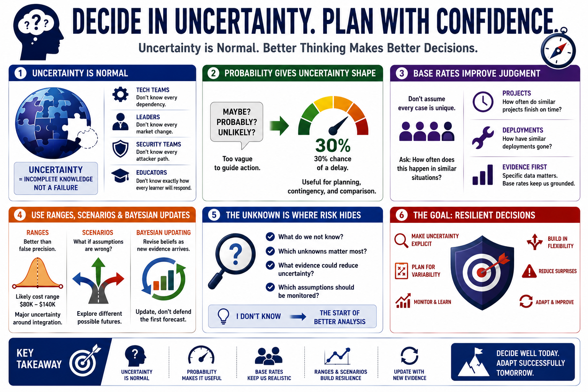

Uncertainty and Probability
Connecting to LMS... Progress: in progress

Narration
Uncertainty means incomplete knowledge about facts, future states, risks, or outcomes. It is not a personal failure. It is the normal condition under which most important decisions are made. Technical teams do not know every dependency. Leaders do not know every market change. Security teams do not know every attacker path. Educators do not know exactly how every learner will respond.
Probability is a practical language for uncertainty. It lets people move beyond vague statements like maybe, probably, or unlikely. A forecast does not need to be perfect to be useful. Saying there is a thirty percent chance of a delay is different from saying delay is possible. The first statement can support planning, contingency, and comparison. The second may be too vague to guide action.
Base rates are one of the simplest ways to improve judgment. A base rate is background information about how often something tends to happen in similar situations. Before assuming a project is unique, ask how often similar projects finish on time. Before assuming a control will be easy to deploy, ask how similar deployments have gone. Specific evidence matters, but base rates keep teams from treating every case as entirely special.
Confidence ranges are also useful. Instead of pretending a cost estimate is a single precise number, a team might say the likely range is between two values, with major uncertainty around integration work. Scenario thinking helps by asking what the world looks like if assumptions are wrong. Bayesian updating, at a high level, means revising beliefs as new evidence arrives instead of defending the first forecast forever.
The phrase I do not know should not end the analysis. It should begin better analysis. What do we not know? Which unknowns matter most? What evidence could reduce uncertainty? Which assumptions should be monitored? The goal is not omniscience. The goal is to make uncertainty explicit enough that decisions can be more resilient.